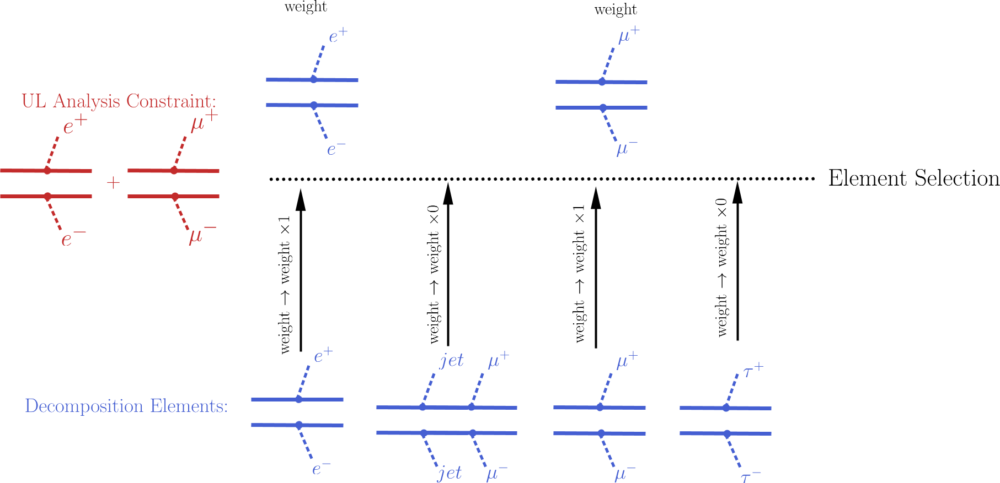
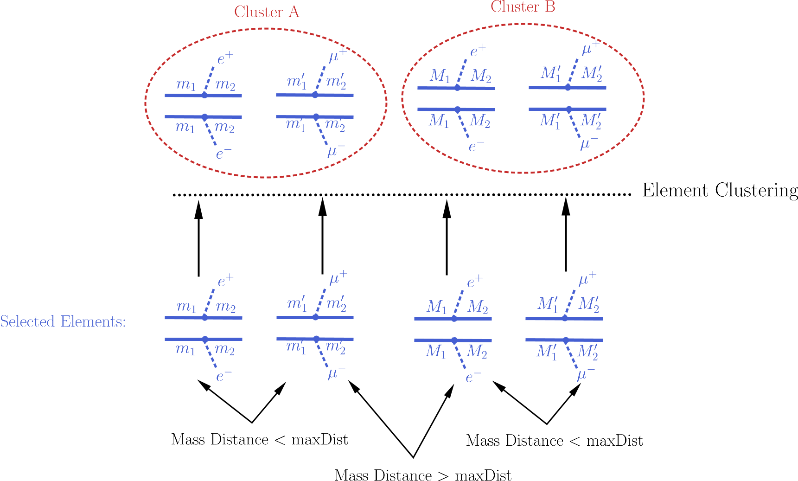
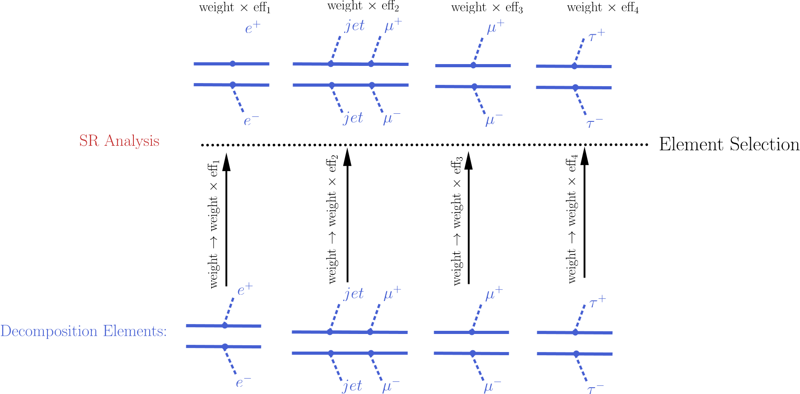

Theory Predictions¶
The decomposition of the input model as a sum of elements is the first step for confronting the model with the experimental limits. The next step consists of computing the relevant signal \(\sigma \times BR\) (or theory predictions) for comparison with the experimental limits. Below we describe the procedure for the computation of the theory predictions after the model has been decomposed.
Computing Theory Predictions¶
As discussed in Database Definitions, SModelS allows for two different types of analyses: UL analyses and EM analyses. [*]
Each of them requires different procedures for computing the theoretical predictions. Since an UL analysis contains upper limits for the cross-section of a given constraint or sum of elements, the corresponding theoretical prediction must contain contributions only from the elements appearing in the constraint. On the other hand, a EM analysis contains limits on the cross-section for specific signal region(s). In this case all the elements generated by the decomposition may contribute (with differing weights or efficiencies) to the theoretical prediction.
Although the details of the computation procedure differ depending on the type of analysis, the procedure can always be divided in two main steps: Element Selection and Element Clustering. The first step is trivial for UL analyses, but more involved for EM analyses, while the opposite is true for the clustering of elements. Once the elements have been selected and clustered, the theory prediction for the analysis is given by the sum of all the element weights (\(\sigma \times BR\)) belonging to the same cluster:
In the case of UL analyses, there might be several clusters (see Element Clustering) for a given analysis, resulting in a list of theory predictions for the corresponding analysis. Each theory prediction must then be individually confronted with the analysis experimental upper limit.
Below we describe the method for computing the theory predictions for each type of analysis separately.
- Theory predictions are computed using the theoryPredictionFor method
Theory Predictions for UL Analyses¶
In order to compute the signal cross-sections for a given UL analysis, so it can be compared against the analysis upper limits, it is first necessary to select the elements generated by the model decomposition and then cluster them according to their masses. These two steps are described below.
Element Selection¶
An UL analysis holds upper limits for the cross-sections of an element or sum of elements. Consequently, the first step for computing the theory predictions for the corresponding analysis is to select the elements that appear in the analysis constraint. This is conveniently done attributing to each element an efficiency equal to 1 (0) if the element appears (does not appear) in the analysis constraint. After all the elements weights (\(\sigma \times BR\)) have been rescaled by these ‘’trivial’’ efficiencies, only the ones with non-zero weights are relevant for the analysis. The element selection is then trivially achieved by selecting all the elements with non-zero weights.
The procedure described above is illustrated graphically in the figure below for the simple example where the analysis constraint is \([[[e^+]],[[e^-]]]\,+\,[[[\mu^+]],[[\mu^-]]]\).
{kind=link}
- The element selection is implemented by the getElementsFrom method
Element Clustering¶
Naively one would expect that after all the elements appearing in the analysis constraint have been selected, it is trivial to compute the theory prediction for the analysis: one must simply sum up the weights (\(\sigma \times BR\)) of all the elements. However, the selected elements usually differ in their masses [†] and the analysis experimental limit (see UL analysis) assumes that all the elements appearing in the analysis constraint have the same mass (or mass array). As a result, the selected elements must be grouped into clusters of equal masses. When grouping the elements, however, one must allow for small mass differences, since the experimental efficiencies should not be strongly sensitive to small mass differences. For instance, assume two elements contain identical mass arrays, except for the parent masses which differ by 1 MeV. In this case it is obvious that for all experimental purposes the two elements have identical masses and should contribute to the same theory predictions (e.g. their weights should be added when computing the signal cross-section). Unfortunately there is no way to unambiguously define ‘’similar masses’’ and the definition should be analysis-dependent, since different analysis will be more or less dependent to mass differences. SModelS uses an analysis dependent measure of the distance between two element masses, as described in Mass Distance.
If two of the selected elements have a mass distance smaller than a maximum value (defined by maxDist), they are gouped in the same mass cluster, as illustrated by the example below:
{kind=link}
Once all the elements have been clustered, their weights can finally be added together and compared against the experimental upper limit.
- The clustering of elements is implemented by the clusterElements method.
Mass Distance¶
As mentioned above, in order to cluster the elements it is necessary to determine whether two elements have similar masses (see Element and Bracket Notation for more details on element mass). Since an absolute definition of ‘’similar masses’’ is not possible and the sensitivity to mass differences depend on the analysis, SModelS uses an analysis-dependent definition. For each element‘s mass array, the analysis upper limit for the corresponding mass values is obtained from the UL analysis. This way, each mass array is mapped to a single number (the cross-section upper limit for the analysis). Then the distance between the two element‘s masses is simply given by the relative difference between their respective upper limits. More explicitly:
where \(M_A,M_B\) (\(x,y\)) are the mass arrays (upper limits) for the elements A and B, respectively. If the mass distance of two elements is smaller than maxDist, the two masses are considered similar.
Notice that the above definition of mass distance quantifies the experimental analysis sensitivity to mass differences, which is the relevant parameter when clustering elements. Also, a check is performed to ensure that masses with very distinct values but similar upper limits are not clustered together.
- The mass distance function is implemented by the distance method
Theory Predictions for EM Analyses¶
In order to compute the signal cross-sections for a given EM analysis, so it can be compared against the analysis limits, it is first necessary to apply the analysis efficiencies to all the elements generated by the model decomposition. This procedure is similar (in nature) to the Element Selection for UL an analysis applied in the case of an UL analysis. After the element‘s weights have being rescaled by the corresponding efficiencies, all of them can be grouped together in a single cluster, which will provide a single theory prediction (signal cross-section) for the analysis. Hence the element clustering discussed below is completely trivial. On the other hand the element selection is slightly more involved than in the UL analysis case and will be discussed in more detail.:
Note: Efficiency Map analyses are not yet functional in the public release!!!
Element Selection¶
The element selection for the case of a EM analysis consists of rescaling all the elements weights by their efficiencies, according to the efficiency map of the corresponding analysis. The efficiency for a given analysis depends both on the element mass and on its topology and particle content. In practice the efficiencies for most of the elements will be extremely small (or zero), hence only a subset effectively contributes after the element selection [‡].
In the figure below we illustrate the element selection for the case of a EM analysis:
{kind=link}
If, for instance, the analysis being considered vetoes \(jets\) and \(\tau\)‘s in the final state, we will have \(eff_2,eff_4 \simeq 0\) for the example in the figure above. Nonetheless, the element selection for a EM analysis is usually more inclusive than the one applied for the UL analysis, resulting in larger values for the theory prediction.
- The element selection is implemented by the getElementsFrom method
Element Clustering¶
Unlike the clustering required in the case of UL analysis (see Element Clustering for an UL analysis), after the efficiencies have been applied to the element’s weights, there is no longer the necessity to group the elements according to their masses, since the mass differences have already been accounted for by the different efficiencies. As a result, after the element selection all elements belong to a single cluster.
- The (trivial) clustering of elements is implemented by the clusterElements method.
Confronting Predictions with Experimental Limits¶
Once the elements generated by the model decomposition have passed the Element Selection and Clustering processes, the theory predictions for a specific analysis are given by the sum of all the element‘s weights belonging to the same cluster (see (1)). In the case of UL analyses, where there can be more than one cluster, there is a list of theory predictions (one for each cluster) for a given analysis.
The cluster total weight can then finally be compared to the experimental limits for the corresponding analysis. In the case of UL analyses the limit is simply the cross-section upper limit provided by the experimental publication or conference note (see Upper Limit analysis).
The procedure described above can be applied to all the analyses in the database, resulting in a list of theory predictions and upper limits for each analysis. A model can then be considered excluded by the experimental results if, for one or more analysis, we have theory prediction \(>\) upper limit [§].
- The upper limits for a given UL analysis can be obtained by the getUpperLimitFor method.
| [*] | Note that EM analyses are not yet functional in the public release! |
| [†] | When refering to an element mass, we mean all the intermediate state masses appearing in the element (or the element mass array). Two elements are considered to have identical masses if their mass arrays are identical (see Element and Bracket Notation for more details). |
| [‡] | The number of elements passing the selection also depends on the availability of efficiency maps for the elements generated by the decomposition. Whenever there are no efficiencies available for a element, the efficiency is taken to be zero. |
| [§] | The statistical significance of the exclusion statement is difficult to quantify exactly, since the model is being tested by a large number of analyses simultaneoustly. |

Table Of Contents
Previous topic
Decomposition into Simplified Models
Next topic
Database of Experimental Analyses